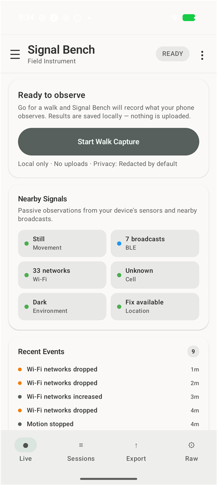
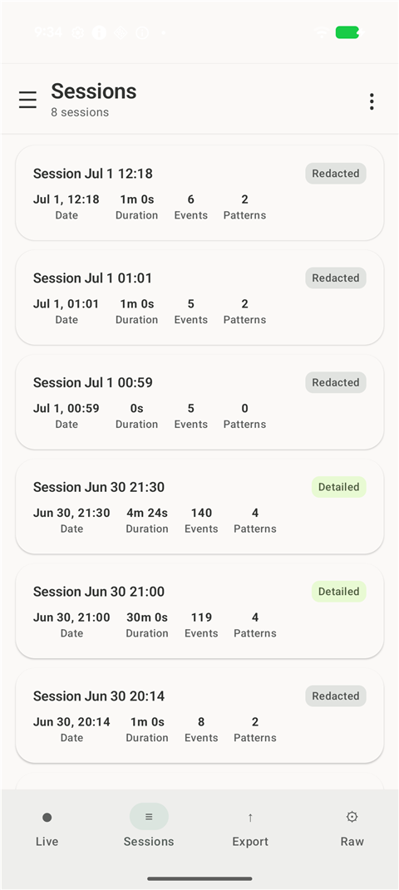
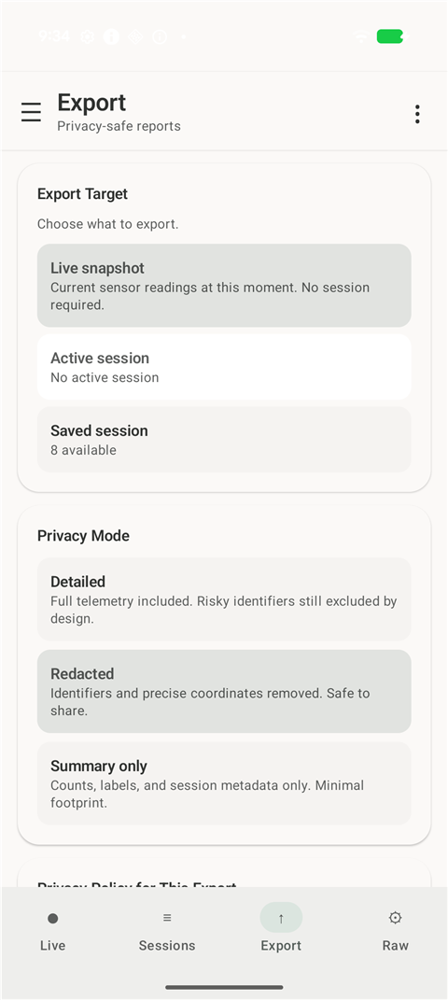
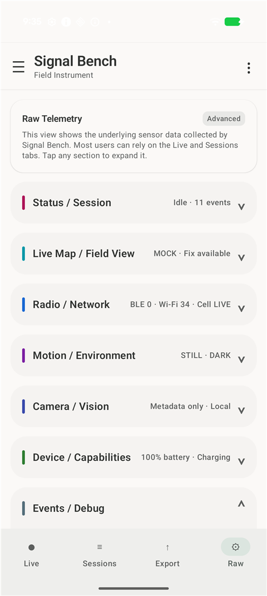
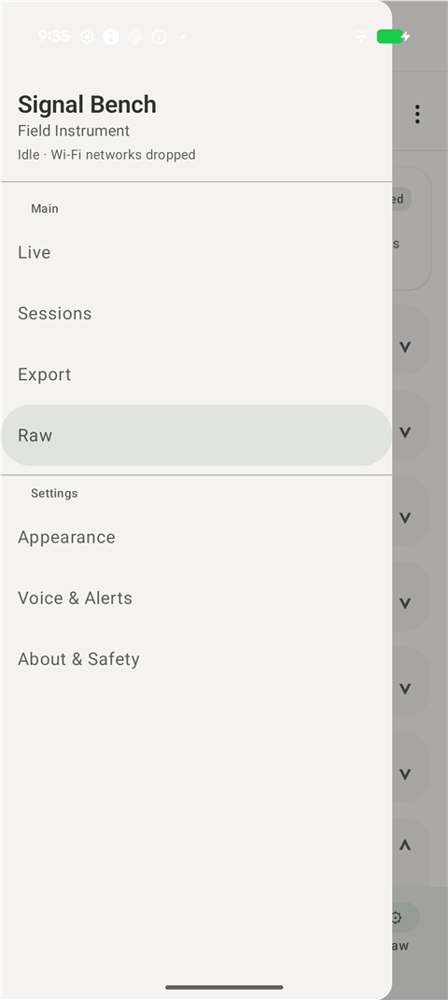
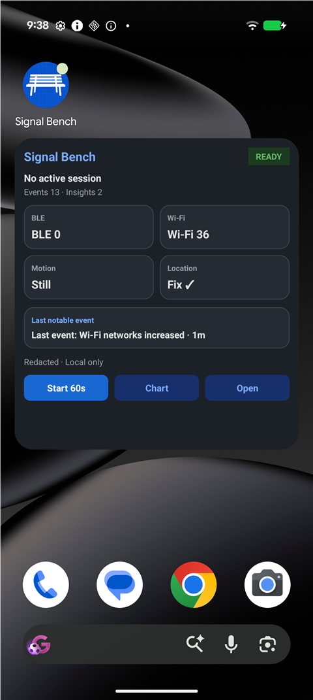

Signal Bench
Field instrument for signal awareness
Take Signal Bench for a walk, capture nearby activity, and export the data.
Signal Bench is a field instrument for signal awareness.
Take it on a walk, start a session, and see how the nearby wireless environment changes as you move.
Signal Bench organizes the Bluetooth, Wi-Fi, location, and sensor information available through Android into clear sessions you can review on your phone or take somewhere else.
Use Signal Bench to observe nearby wireless activity, record measurement sessions, compare readings across places and times, explore observations on a map, and share or export your session data.
Exporting is one of the main reasons Signal Bench exists. Open your data in Excel, use Copilot to create charts and visualizations, or continue working with it in your own spreadsheets, scripts, notebooks, and analysis tools.
Signal Bench does not intercept communications or identify people. It presents information made available by the phone and Android, so results may vary by device, permissions, location, and Android version.
Take it for a walk, collect a session, and see what the data can show you.
Screenshots
Signal Bench on a Pixel phone — the Live dashboard, session history, export options, raw telemetry, in-app navigation, and the home-screen widget.
{kind=link}

{kind=link}

{kind=link}

{kind=link}

{kind=link}

{kind=link}
